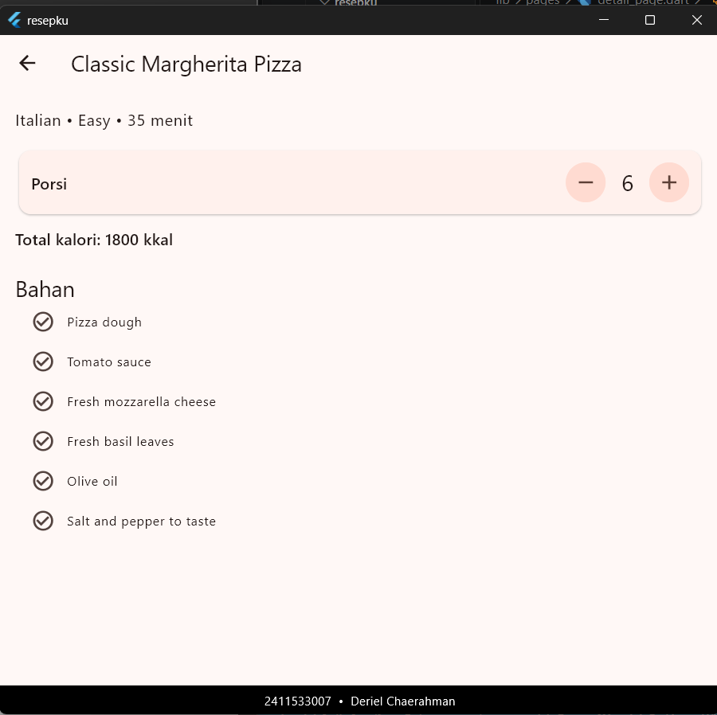
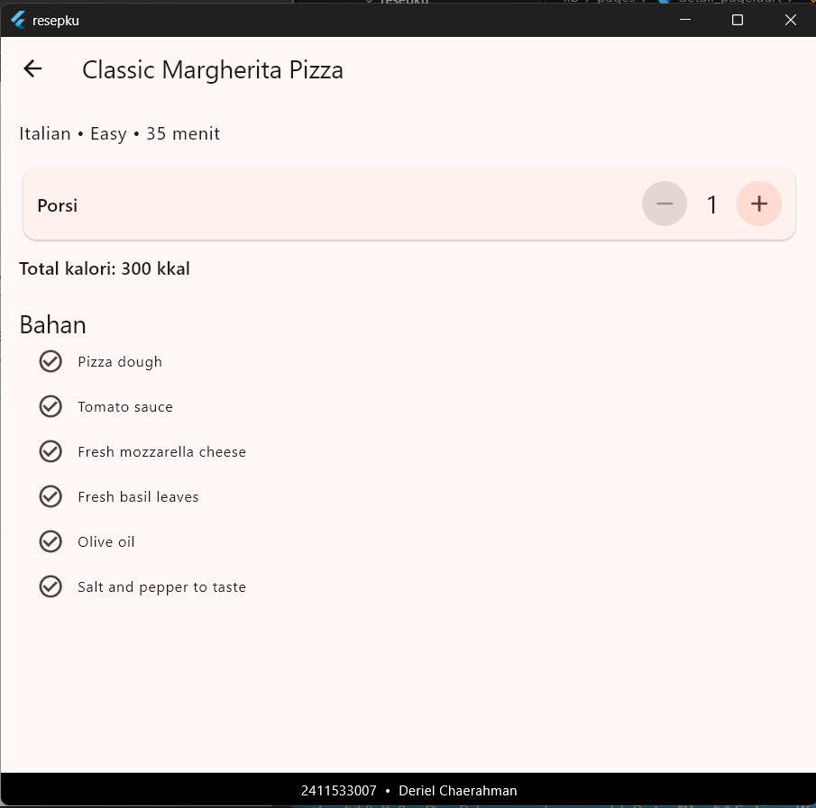
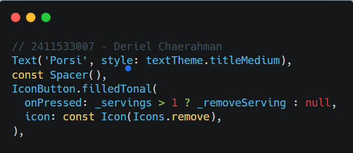
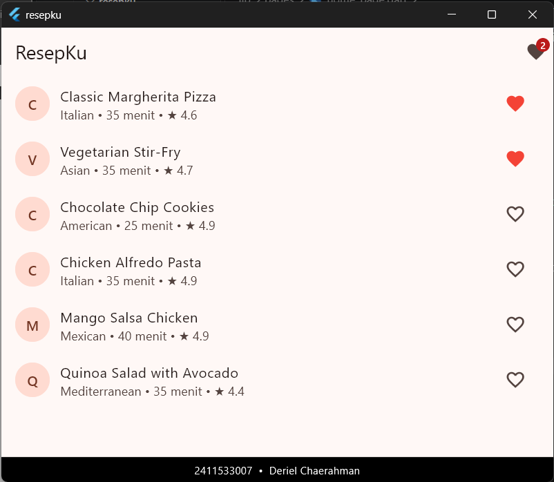
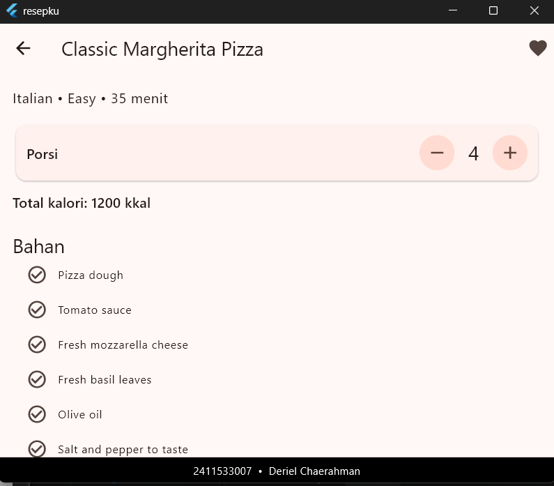
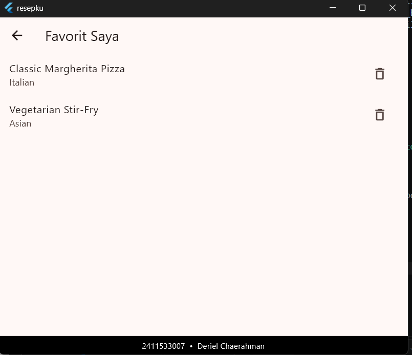
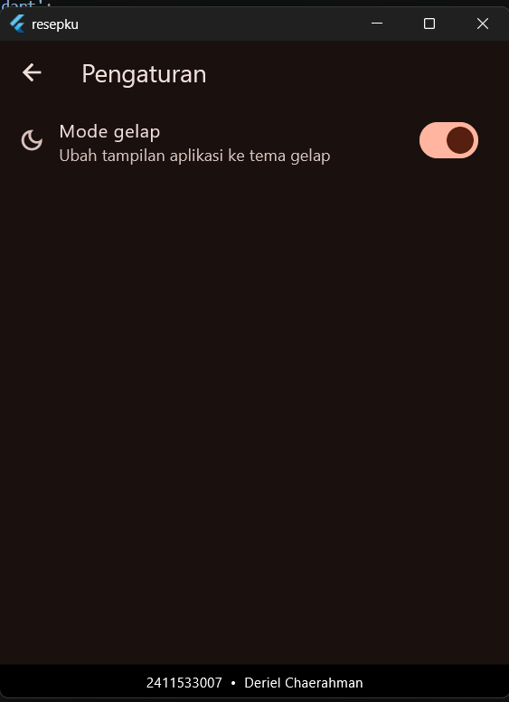
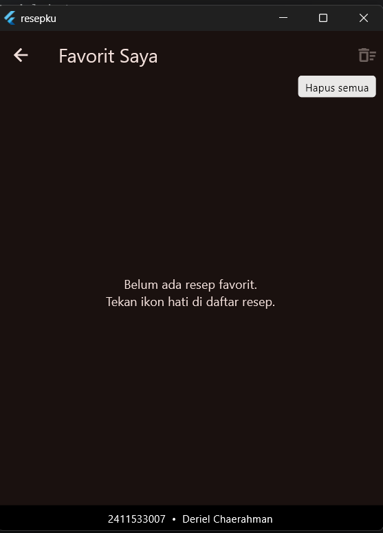

State Management
(setState dan Provider pada Aplikasi ResepKu)
Dibuat : November 2026
Repository GitHubPada praktikum aplikasi mobile setelah UTS ini dibuat project flutter baru bernama ResepKu, sebuah aplikasi untuk menampilkan daftar resep masakan. Proyek ini akan terus dikembangkan sampai Modul 10, jadi struktur foldernya sengaja dirapikan sejak awal.
Fokus Modul 6 adalah state management, yaitu cara aplikasi menyimpan data yang
bisa berubah lalu memberi tahu tampilan supaya ikut berubah. Ada dua pendekatan yang
dicoba. Pertama setState() untuk fitur jumlah porsi yang hanya dipakai satu
halaman. Kedua Provider untuk fitur favorit yang datanya dibutuhkan
banyak halaman sekaligus. Di tengah jalan ada eksperimen kecil yang memperlihatkan
sendiri kenapa state lokal tidak cukup untuk fitur favorit.
StatefulWidget dan setState()
pada fitur jumlah porsi di halaman detail.provider
(ChangeNotifier dan MultiProvider) untuk fitur favorit.
context.watch, context.read, dan
Consumer di beberapa halaman.
StatefulWidget punya objek State terpisah untuk
menyimpan data. Datanya berupa field biasa di class State, nilai awalnya
diisi di initState(), dan data milik widget diakses lewat
widget.namaField. Setiap perubahan data dibungkus dengan
setState(() { ... }) supaya Flutter tahu harus menjalankan
build() ulang. Cara ini cocok untuk state lokal
(ephemeral) yang hanya dipakai satu widget, dan datanya ikut hilang
ketika halaman ditutup.
ChangeNotifier adalah class bawaan Flutter yang bisa menyimpan
daftar pendengar (listener). Data ditaruh di class turunannya, dan
setiap kali data berubah kita memanggil notifyListeners()
supaya semua widget yang mendengarkan ikut rebuild. Data sebaiknya dibuat
private dan dibuka lewat getter saja, sehingga semua perubahan wajib lewat
method seperti toggle() atau clear().
provider membagikan objek ChangeNotifier
ke seluruh widget tree. ChangeNotifierProvider dipasang di atas
MaterialApp supaya semua route, termasuk halaman yang dibuka
lewat Navigator.push, bisa mengakses objek yang sama.
MultiProvider dipakai untuk memasang beberapa provider
sekaligus tanpa harus ditumpuk satu per satu.
context.watch dipakai di dalam build() dan membuat
widget ikut rebuild saat data berubah. context.read dipakai di
dalam callback seperti onPressed, hanya memanggil method tanpa
mendengarkan perubahan. Consumer adalah bentuk widget dari
watch. Fungsi builder di dalamnya dijalankan ulang
setiap notifyListeners() dipanggil, jadi hanya bagian di
dalamnya yang rebuild.
provider yang dipasang lewat
flutter pub add provider
Seluruh kode proyek disusun terstuktur di dalam folder lib/ dan dibagi ke
lima folder
sesuai tugasnya. Pembagian menerapakn konsep pemrograman yang baik dan memudahkan
pengembangan project hingga di Modul 7 sampai 10.
lib/
├── main.dart
├── models/
│ └── recipe.dart
├── data/
│ └── dummy_recipes.dart
├── providers/
│ ├── favorite_provider.dart
│ └── theme_provider.dart
├── pages/
│ ├── home_page.dart
│ ├── detail_page.dart
│ ├── favorite_page.dart
│ └── settings_page.dart
└── widgets/
├── identity_footer.dart
├── recipe_tile.dart
└── favorite_badge_button.dartRecipe yang menjelaskan apa saja yang dimiliki satu resep. Kalau
nanti data datang dari API, model inilah yang menampung hasilnya.ChangeNotifier, yaitu
FavoriteProvider untuk daftar favorit dan ThemeProvider
untuk mode tema dari Latihan 1.
main.dart sebagai titik masuk aplikasi,
tempat provider dan MaterialApp dipasang.Bagian ini menjelaskan isi tiap file, dikelompokkan per folder. Beberapa file mengalami perubahan di tengah praktikum, jadi versi awal dan versi akhirnya dijelaskan bersamaan.
A. Persiapan Project
Project dibuat dengan mengetik command flutter create resepku di IDE VScode
. Setelah framework project terbuat, di
dalam lib/ buat pembagian 5 folder : models, data, providers, pages, dan
widgets. File
test/widget_test.dart bawaan template dihapus
karena merujuk ke class MyApp yang sudah tidak ada, dan modul ini memang
belum memakai testing. Package provider dipasang dengan
flutter pub add provider sebelum masuk ke Bagian C.
B. Folder models
1. recipe.dart
Berisi class Recipe yang mewakili satu resep. Datanya meliputi id, nama,
asal masakan, tingkat kesulitan, waktu persiapan, waktu memasak, jumlah porsi, kalori
per porsi, rating, gambar, dan daftar bahan. Semua field bersifat final
sehingga objek resep tidak berubah setelah dibuat. Ada juga getter
totalTimeMinutes yang menjumlahkan waktu persiapan dan memasak. Getter
dipanggil tanpa tanda kurung, jadi dari luar terlihat seperti field biasa padahal
nilainya dihitung. Field image belum dipakai sekarang dan baru dimanfaatkan
di Modul 7.
C. Folder data
1. dummy_recipes.dart
Menyimpan daftar konstanta dummyRecipes berisi enam resep pertama dari
dummyjson.com/recipes. Karena isinya sama dengan data API, di Modul 8 yang diganti cukup
sumber datanya saja dan halaman yang memakainya tidak perlu diubah.
D. Folder widgets
1. identity_footer.dart
Berisi IdentityFooter, widget yang menampilkan NIM dan nama di bagian bawah
layar supaya identitas ikut terekam di setiap screenshot. Widget ini membungkus halaman
di dalam Column, halamannya diberi ruang Expanded dan footer
berada di bawahnya. MediaQuery.removePadding dipakai agar ruang aman di
bawah tidak dihitung dua kali, sedangkan SafeArea menjaga tulisan footer
tetap terlihat di layar yang punya tepi melengkung atau tombol navigasi.
2. recipe_tile.dart
Berisi baris resep yang tampil di daftar Home dan file ini berubah tiga kali selama
praktikum. Pada versi awal, tile berupa StatelessWidget dengan
ListTile yang menampilkan huruf pertama nama resep di lingkaran, nama resep
sebagai judul, serta asal masakan, total waktu, dan rating sebagai subjudul. Ketika
ditekan, tile membuka DetailPage lewat Navigator.push sambil
mengirim objek resep lewat constructor.
Pada versi eksperimen (Bagian B), tile diubah menjadi StatefulWidget dengan
field _isFavorite dan tombol hati di sisi kanan yang mengubahnya lewat
setState(). Versi ini sengaja dibuat untuk memperlihatkan bahwa status
favorit yang terkunci di dalam satu tile tidak bisa dibaca widget lain. Hasil
pengamatannya dibahas di bagian Pertanyaan Analisis.
Pada versi akhir, tile kembali menjadi StatelessWidget. Status favorit
dibaca dengan context.watch di dalam build() supaya tile ikut
rebuild saat daftar favorit berubah, sedangkan tombol hati memakai
context.read di dalam onPressed untuk memanggil
toggle().
3. favorite_badge_button.dart
Berisi FavoriteBadgeButton, tombol ikon hati di AppBar yang dihiasi widget
Badge dari Material 3 untuk menampilkan jumlah favorit. Jumlahnya dibaca
lewat context.watch dan badge hanya tampil kalau jumlahnya lebih dari 0.
Ketika tombol ditekan, aplikasi berpindah ke FavoritePage. Tombol ini
dibuat sebagai widget terpisah supaya hanya bagian ini yang rebuild saat jumlah favorit
berubah, bukan seluruh HomePage.
E. Folder pages
1. home_page.dart
Halaman pertama aplikasi. Isinya Scaffold dengan AppBar berjudul ResepKu
dan ListView yang memuat satu RecipeTile untuk setiap resep di
dummyRecipes. Pada versi awal AppBar masih polos. Di versi akhir,
FavoriteBadgeButton dipasang di actions AppBar, dan di Latihan
1 ditambah tombol ikon pengaturan di sebelahnya.
2. detail_page.dart
Menampilkan informasi lengkap satu resep. Halaman ini memakai
StatefulWidget karena jumlah porsi berubah ketika tombol plus atau minus
ditekan. Ada tiga hal penting di sini. Nilai awal _servings diisi di
initState() dari widget.recipe.servings, data resep diakses
lewat widget.recipe, dan setiap perubahan porsi dibungkus dengan
setState(). Total kalori dihitung dari kalori per porsi dikali jumlah
porsi, jadi ikut berubah setiap porsi berubah. Tombol minus nonaktif ketika porsi
bernilai 1 karena properti onPressed diisi null lewat kondisi
_servings > 1, dan method pengurangnya juga punya pengecekan yang sama
sebagai pengaman.
Setelah Provider dipasang, halaman ini juga membaca status favorit lewat
context.watch dan punya tombol hati di actions AppBar. Dengan
begitu satu halaman memakai dua jenis state sekaligus, yaitu _servings
sebagai state lokal dan favorit sebagai state global. Kombinasi seperti ini wajar dalam
aplikasi nyata.
Checkpoint 1
Resep Classic Margherita Pizza punya porsi awal 4. Setelah dinaikkan menjadi 6, total kalorinya menunjukkan 1800 kkal (6 × 300). Screenshot berikutnya memperlihatkan tombol minus yang tidak aktif ketika porsi bernilai 1, disertai baris kode yang menyebabkannya.
//Checkpoint 1


3. favorite_page.dart
Halaman Favorit yang isinya dibungkus Consumer. Kalau jumlah favorit 0,
halaman menampilkan pesan bahwa belum ada resep favorit. Kalau ada isinya, resep
ditampilkan dalam daftar dan tiap barisnya punya tombol hapus yang memanggil
toggle(). Fungsi builder milik Consumer
dijalankan ulang setiap notifyListeners() dipanggil. Di Latihan 2, AppBar
halaman ini ditambah tombol Hapus semua.
F. Folder providers
1. favorite_provider.dart
Berisi FavoriteProvider, class turunan ChangeNotifier yang
menyimpan daftar resep favorit di _items yang bersifat private. Dari luar
data hanya bisa dibaca lewat getter items yang tidak bisa dimodifikasi,
jadi setiap perubahan wajib lewat toggle() atau clear() dan
pemanggilan notifyListeners() tidak mungkin terlewat. Selain itu ada getter
count untuk jumlah favorit dan method isFavorite() untuk
mengecek satu resep. Resep dibandingkan berdasarkan id, bukan objeknya,
karena di Modul 8 objek Recipe akan dibuat ulang dari JSON sehingga
objeknya tidak lagi sama walaupun resepnya sama.
G. File main.dart
1. Versi awal
Versi awal hanya menjalankan ResepKuApp dengan tema
Colors.deepOrange, memasang IdentityFooter lewat parameter
builder pada MaterialApp, dan menjadikan HomePage
halaman awal. Karena builder membungkus Navigator, footer
otomatis muncul di semua halaman tanpa ditambahkan ke tiap Scaffold.
2. Versi akhir
Pada versi akhir, MultiProvider membungkus ResepKuApp dan
FavoriteProvider didaftarkan di dalamnya. Posisinya di atas
MaterialApp agar semua route bisa mengakses provider yang sama. Baris
builder untuk footer tetap dipertahankan, dan setelah file ini diubah wajib
melakukan hot restart karena hot reload tidak menjalankan ulang main() dan
akan memunculkan ProviderNotFoundException. Di Latihan 1,
ThemeProvider ikut didaftarkan di sini.
H. Pengujian dan Checkpoint 2
Setelah hot restart, enam skenario pengujian dijalankan dan semuanya sesuai dengan hasil yang diharapkan.
| No | Skenario | Hasil yang Diharapkan | Sesuai? |
|---|---|---|---|
| 1 | Tap ikon hati pada Margherita dan Alfredo di Home | Ikon berwarna merah, badge menunjukkan angka 2 | ✔ Sesuai |
| 2 | Buka detail Margherita | Ikon hati di AppBar terisi | ✔ Sesuai |
| 3 | Di halaman detail, tap ikon hati, lalu kembali ke Home | Ikon Margherita kosong, badge menunjukkan angka 1 | ✔ Sesuai |
| 4 | Tap badge di AppBar | Halaman Favorit hanya berisi Alfredo | ✔ Sesuai |
| 5 | Hapus Alfredo dari halaman Favorit, lalu kembali | Muncul pesan "Belum ada resep favorit", badge hilang | ✔ Sesuai |
| 6 | Ubah porsi menjadi 2, kembali ke Home, lalu buka lagi resep yang sama | Porsi kembali ke nilai awal karena state lokal dibuang saat halaman ditutup | ✔ Sesuai |
Screenshot Checkpoint 2 menunjukkan Home dengan badge bernilai 2, halaman Detail dengan ikon hati terisi, dan halaman Favorit.



1. Jawaban tiga pertanyaan pengamatan (Langkah B.2)
a). Apakah ikon hati berubah? Mengapa? Ya, ikonnya berubah menjadi hati
bewarna merah. Penyebabnya, setState() di _RecipeTileState
memicu
build() ulang pada tile yang ditekan, dan nilai _isFavorite
yang sudah berubah dipakai untuk memilih ikon.
b). Bisakah jumlah favorit ditampilkan di judul AppBar HomePage? Tidak
bisa. Data _isFavorite ada di class _RecipeTileState milik
tiap tile, dan setiap tile menyimpan nilainya sendiri. HomePage adalah
widget terpisah yang tidak punya akses ke state tile, jadi tidak ada cara untuk
menghitung berapa tile yang sedang favorit.
c). Bagaimana halaman detail tahu resep itu favorit? Tidak tahu.
DetailPage hanya menerima objek recipe lewat constructor,
sedangkan status favorit terkunci di dalam state tile dan tidak ikut terkirim. Kalaupun
statusnya dikirim lewat constructor, arahnya cuma satu sisi, sehingga perubahan yang
dilakukan di detail tidak bisa kembali memengaruhi tile di Home.
2. Mengapa jumlah porsi tetap memakai setState() dan tidak dimasukkan ke Provider?
Jumlah porsi hanya dibutuhkan satu halaman, yaitu halaman detail, dan tidak ada widget lain yang perlu membacanya. Jadi tidak ada alasan menaruhnya di tempat yang bisa dijangkau seluruh aplikasi. Hasil skenario 6 membuktikan ini. Ketika porsi diubah menjadi 2 lalu halaman ditutup dan dibuka lagi, porsinya kembali ke nilai awal karena state lokal ikut dibuang bersama halamannya. Perilaku itu justru yang diinginkan, sebab setiap kali resep dibuka porsinya wajar mulai dari takaran bawaan resep. Kalau porsi dimasukkan ke Provider, nilainya akan menetap dan semua widget yang mendengarkan ikut rebuild tanpa perlu.
3. Memindahkan ChangeNotifierProvider dari main() ke dalam HomePage
Ketika halaman Favorit dibuka, aplikasi error dengan
ProviderNotFoundException. Penyebabnya ada di posisi provider pada widget
tree. Navigator.push menambahkan route baru ke Navigator yang
berada di dalam MaterialApp, sehingga FavoritePage menjadi
cabang tersendiri di widget tree, sejajar dengan HomePage dan bukan anak
dari HomePage. Provider yang membungkus Scaffold di dalam
HomePage hanya bisa dilihat oleh widget di bawahnya, jadi
FavoritePage tidak menemukan provider di atasnya. Halaman Detail juga akan
mengalami hal yang sama. Itu sebabnya provider harus diletakkan di atas
MaterialApp supaya semua route berada di bawahnya. Setelah percobaan ini,
kode dikembalikan seperti semula.
Latihan 1. Tema Gelap dan Terang
Latihan ini membuat tema gelap yang bisa diaktifkan lewat halaman Pengaturan. Ada empat file yang terlibat, dua file baru dan dua file yang diubah.
1. theme_provider.dart
import 'package:flutter/material.dart';
class ThemeProvider extends ChangeNotifier {
ThemeMode _themeMode = ThemeMode.light;
ThemeMode get themeMode => _themeMode;
bool get isDark => _themeMode == ThemeMode.dark;
void setDark(bool value) {
_themeMode = value ? ThemeMode.dark : ThemeMode.light;
notifyListeners();
}
}
ThemeProvider mewarisi ChangeNotifier dan menyimpan
_themeMode yang awalnya bernilai ThemeMode.light. Getter
themeMode dipakai oleh MaterialApp, sedangkan
isDark memudahkan switch untuk mengetahui posisinya. Method
setDark() mengubah mode sesuai nilai switch lalu memanggil
notifyListeners() agar widget yang mendengarkan ikut rebuild.
2. main.dart
import 'package:flutter/material.dart';
import 'package:provider/provider.dart';
import 'package:resepku/pages/home_page.dart';
import 'package:resepku/providers/favorite_provider.dart';
import 'package:resepku/providers/theme_provider.dart';
import 'package:resepku/widgets/identity_footer.dart';
void main() {
runApp(
MultiProvider(
providers: [
ChangeNotifierProvider(create: (context) => FavoriteProvider()),
ChangeNotifierProvider(create: (context) => ThemeProvider()),
],
child: const ResepKuApp(),
),
);
}
class ResepKuApp extends StatelessWidget {
const ResepKuApp({super.key});
@override
Widget build(BuildContext context) {
// watch: MaterialApp harus rebuild saat mode tema berubah
final themeMode = context.watch<ThemeProvider>().themeMode;
return MaterialApp(
title: 'ResepKu',
debugShowCheckedModeBanner: false,
theme: ThemeData(colorSchemeSeed: Colors.deepOrange),
darkTheme: ThemeData(
colorSchemeSeed: Colors.deepOrange,
brightness: Brightness.dark,
),
themeMode: themeMode,
builder: (context, child) => IdentityFooter(child: child!), // jangan dihapus
home: const HomePage(),
);
}
}
ThemeProvider didaftarkan di MultiProvider berdampingan dengan
FavoriteProvider. Di MaterialApp ditambahkan
darkTheme dengan brightness gelap dan themeMode
yang diambil dari provider. Nilainya dibaca memakai context.watch, bukan
read, karena MaterialApp harus ikut rebuild ketika mode tema
berubah. Kalau memakai read, nilainya hanya dibaca sekali dan tampilan
tidak akan berganti saat switch digeser. Baris builder untuk footer
identitas tidak dihapus.
3. settings_page.dart
import 'package:flutter/material.dart';
import 'package:provider/provider.dart';
import 'package:resepku/providers/theme_provider.dart';
class SettingsPage extends StatelessWidget {
const SettingsPage({super.key});
@override
Widget build(BuildContext context) {
final theme = context.watch<ThemeProvider>();
return Scaffold(
appBar: AppBar(title: const Text('Pengaturan')),
body: ListView(
children: [
SwitchListTile(
title: const Text('Mode gelap'),
value: theme.isDark,
onChanged: (value) => context.read<ThemeProvider>().setDark(value),
),
],
),
);
}
}
Halaman Pengaturan berisi SwitchListTile bertuliskan Mode gelap. Posisi
switch dibaca lewat watch supaya selalu sesuai dengan mode yang sedang
aktif. Saat digeser, onChanged memanggil setDark() lewat
read karena di dalam callback kita hanya perlu memanggil method tanpa
mendengarkan perubahan.
4. home_page.dart
import 'package:flutter/material.dart';
import 'package:resepku/data/dummy_recipes.dart';
import 'package:resepku/pages/settings_page.dart';
import 'package:resepku/widgets/favorite_badge_button.dart';
import 'package:resepku/widgets/recipe_tile.dart';
class HomePage extends StatelessWidget {
const HomePage({super.key});
@override
Widget build(BuildContext context) {
return Scaffold(
appBar: AppBar(
title: const Text('ResepKu'),
actions: [
IconButton(
tooltip: 'Pengaturan',
icon: const Icon(Icons.settings),
onPressed: () => Navigator.push(
context,
MaterialPageRoute(builder: (context) => const SettingsPage()),
),
),
const FavoriteBadgeButton(),
],
),
body: ListView(
children: [
for (final recipe in dummyRecipes) RecipeTile(recipe: recipe),
],
),
);
}
}
Tombol ikon pengaturan ditambahkan di actions AppBar, sebelum
FavoriteBadgeButton, dan membuka SettingsPage lewat
Navigator.push. List actions tidak lagi const
karena IconButton memakai context.
Hasil Latihan 1
Ketika switch diaktifkan, seluruh aplikasi berganti ke tema gelap, termasuk footer identitas yang tetap terlihat.

Latihan 2. Menghapus Semua Favorit
Latihan ini hanya mengubah satu file, yaitu halaman Favorit.
favorite_page.dart
import 'package:flutter/material.dart';
import 'package:provider/provider.dart';
import 'package:resepku/providers/favorite_provider.dart';
class FavoritePage extends StatelessWidget {
const FavoritePage({super.key});
Future<void> _confirmClear(BuildContext context) async {
final confirmed = await showDialog<bool>(
context: context,
builder: (dialogContext) => AlertDialog(
title: const Text('Hapus semua favorit?'),
content: const Text('Semua resep akan dihapus dari daftar favorit.'),
actions: [
TextButton(
onPressed: () => Navigator.pop(dialogContext, false),
child: const Text('Batal'),
),
FilledButton(
onPressed: () => Navigator.pop(dialogContext, true),
child: const Text('Hapus'),
),
],
),
);
if (confirmed == true && context.mounted) {
context.read<FavoriteProvider>().clear();
}
}
@override
Widget build(BuildContext context) {
// watch: tombol di AppBar harus ikut berubah saat jumlah favorit berubah
final count = context.watch<FavoriteProvider>().count;
return Scaffold(
appBar: AppBar(
title: const Text('Favorit Saya'),
actions: [
TextButton(
onPressed: count == 0 ? null : () => _confirmClear(context),
child: const Text('Hapus semua'),
),
],
),
body: Consumer<FavoriteProvider>(
builder: (context, favorite, child) {
if (favorite.count == 0) {
return const Center(
child: Text(
'Belum ada resep favorit.\nTekan ikon hati di daftar resep.',
textAlign: TextAlign.center,
),
);
}
return ListView(
children: [
for (final recipe in favorite.items)
ListTile(
title: Text(recipe.name),
subtitle: Text(recipe.cuisine),
trailing: IconButton(
icon: const Icon(Icons.delete_outline),
onPressed: () => favorite.toggle(recipe),
),
),
],
);
},
),
);
}
}
Di AppBar ditambahkan tombol Hapus semua. Jumlah favorit dibaca lewat
context.watch di dalam build() supaya tombolnya ikut berubah
saat daftar berubah. Tombol nonaktif ketika daftar kosong karena onPressed
diisi null saat count bernilai 0, sama seperti pola tombol
minus pada porsi.
Saat tombol ditekan, method _confirmClear() menampilkan
AlertDialog berisi tombol Batal dan Hapus. showDialog
mengembalikan true atau false, dan clear() milik
FavoriteProvider hanya dipanggil kalau hasilnya true.
Pengecekan context.mounted memastikan halaman masih aktif setelah proses
await selesai. Bagian body tetap memakai Consumer seperti
sebelumnya.
Hasil Latihan 2
Dialog konfirmasi muncul ketika tombol Hapus semua ditekan, dan tombolnya nonaktif saat daftar favorit kosong.

Lewat praktikum 6 ini, aplikasi ResepKu berhasil dibangun dengan dua jenis state yang dipakai sesuai kebutuhannya. Berhasil memahami perbedaan antara state lokal ke Provider.
notifyListeners(), sehingga
tile, detail, badge, dan halaman Favorit selalu sinkron.watch dipakai saat
membangun tampilan, read dipakai di dalam callback, dan
Consumer membatasi rebuild pada bagian yang memang butuh.
MaterialApp supaya semua route bisa mengaksesnya, dan percobaan
memindahkannya terbukti memunculkan ProviderNotFoundException.
ThemeProvider dan untuk fitur hapus semua favorit lewat
clear().